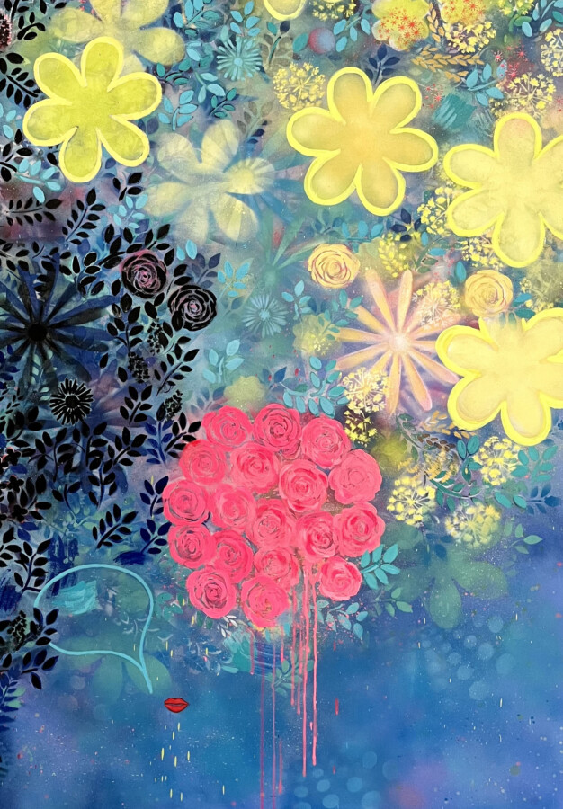

<!DOCTYPE html>
<html lang="en">
<head>
  <meta charset="UTF-8">
  <meta name="viewport" content="width=device-width, initial-scale=1.0">
  <title>Midwestern Biennial 2026 | The Visualist</title>
  <link rel="icon" href="../visualist-favicon.png" type="image/png">
  <link rel="stylesheet" href="https://use.typekit.net/orw0adz.css">
  <link rel="stylesheet" href="../styles.css">
</head>
<body data-page="event" data-active-nav="archive" data-base-path="../">

  <header class="site-header" data-visualist-header></header>

  <main class="site-main event-main">
    <div data-visualist-nav></div>
    <article class="event-detail">
      <div class="event-detail-image"></div>
      <div class="event-detail-body">
        <h1 class="event-detail-title">Midwestern Biennial 2026</h1>
        <p class="event-detail-meta">
          <span>Friday, May 22, 2026</span><span><a href="https://rockfordartmuseum.org/" target="_blank" rel="noopener">Rockford Art Museum</a></span><span>711 N Main St, Rockford, IL 61103</span>
          <span>Opening Friday, May 22nd, from 5PM - 7PM</span>
          <span>On view through Sunday, September 27th</span>
        </p>
        <div class="event-detail-description">
          <p>Juried by Laurie Hogin, acclaimed artist and Professor at the University of Illinois Urbana-Champaign, the 2026 Rockford Midwestern is the 78th presentation of the museum’s survey exhibition of new work by contemporary artists from across the Midwest. Hogin selected 98 pieces by 98 artists to be included in this year’s exhibition. First choice and two Juror’s Choice awards will be announced at the opening – as well as the 2026 Dean Alan Olson Purchase Award, to the artist whose work has been selected for inclusion in the Rockford Art Museum permanent collection.</p>
          <p>Exhibition-related programs—</p>
          <p>July 23, 5:30 PM | Lecture with exhibiting artist (free, public)</p>
          <p>September 11, 9 – 10 AM | Coffee with the Curator (free, public)</p>
          <p>The Rockford Midwestern Biennial is organized by Executive Director/Chief Curator Carrie Johnson and juried by Laurie Hogin. This exhibition and its related educational programming are sponsored by the Dean Alan Olson Foundation and partially supported by a grant from the Illinois Arts Council Agency.</p>
          <p>Featured artists: Luke Achterberg, Deidre Argyle, Nelson Armour, Karen Azarnia, Heidi Bailey, Patricia Baldwin Seggebruch, Michael Banning, Audrey Barcio, Jason Beck, Victoria Bein, Lauren Bertelson, Lois Bielefeld, Jill Birschbach, Rebecca Bissi, Sharon Bladholm, Mark Blassage, Jennifer Bock-Nelson, Mark Brautigam, Deborah Brooks, H. Buchholz, Roy Cacek, Rebecca Carlton, Danielle Casali, Ethan Chan, Bob Cholke, Bobbye Cochran, Brent Cole, Bridget Conn, Benjamin Cook, Kevin Corotis, Dragana Crnjak, Gary Cudworth, Geornica Daniels, Anita Dawson, Jacob Del Negro, Sessah DelaRue, Brian DePauli, Jason Dunda, Darlys Ewoldt, Deirdre Fox, Rhonda Gates, Shelley Gilchrist, Tanya Gill, Rita Grendze, Camryn Gulledge, Denis Hagen, Fletcher Hayes, Alan Hobscheid, Ellen Holtzblatt, Larsen Husby, Jeff Ignatius, Shane-Jahi Jackson, Noah Kashiani, Paula Kloczkowski Luberda, Kara Knutson, John Kurman, Diane Lamboley, Isaiah Lee, Braydon Letsinger, Diane Levesque, Tanya Lunina, Lisa Madden, Ellen Mahaffy, Valerie Mangion, T. Michael Martin, Madeline Martin, Aeron Maxwell, Don McCurdy, Tom McHale, Nancie King Mertz, Renee Meyer Ernst, Ryan Peter Miller, Zach Mory, Therese Mulgrew, Louisa Murzyn, Catherine Nelson, Dan Oliver, Robert C Osborne, Mark Pack, Mielle Park, Lorraine Peltz, Denise Presnell, Jessie Rebik, Jason Reblando, CoCo Ree Lemery, Kimberly Rodey, Kurt Schabell, Edwin Shelton, Dan Simoneau, DeAnna Skedel, Kathy Snow Stratton, Shalen Stephenson, Dan Swanson, Tori Tasch, Ron Testa, Ged Trias, Mark Weller, A M Yeager</p>
          <p>Rockford Art Museum aims to provide an accessible, engaging, and educational experience to all visitors. Click here to find details outlining the accessibility of our layout and our accessibility initiatives.</p>
        </div>
        <p class="listing-tags"><a href="../tag.html?tag=a-m-yeager" target="_blank" rel="noopener">A M Yeager</a><a href="../tag.html?tag=aeron-maxwell" target="_blank" rel="noopener">Aeron Maxwell</a><a href="../tag.html?tag=alan-hobscheid" target="_blank" rel="noopener">Alan Hobscheid</a><a href="../tag.html?tag=anita-dawson" target="_blank" rel="noopener">Anita Dawson</a><a href="../tag.html?tag=audrey-barcio" target="_blank" rel="noopener">Audrey Barcio</a><a href="../tag.html?tag=benjamin-cook" target="_blank" rel="noopener">Benjamin Cook</a><a href="../tag.html?tag=bob-cholke" target="_blank" rel="noopener">Bob Cholke</a><a href="../tag.html?tag=bobbye-cochran" target="_blank" rel="noopener">Bobbye Cochran</a></p>
        <p class="event-source-links">
          <a class="event-source-link" href="../index.html#archive?date=2026-05-22">More events on this date</a>
          <a class="event-source-link" href="https://thevisualist.org/2026/05/midwestern-biennial-2026/" target="_blank" rel="noopener">Original listing</a>
        </p>
      </div>
    </article>
  </main>

  <footer class="site-footer" data-visualist-footer></footer>

  <!-- scripts live at the end of the body so the static page paints first -->
  <script src="../taglines.js"></script>
  <script src="../components.js"></script>
  <script>
    Visualist.renderChrome();
    Visualist.initHeaderAccordion();
  </script>

</body>
</html>
